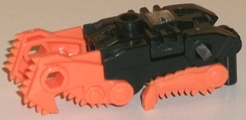
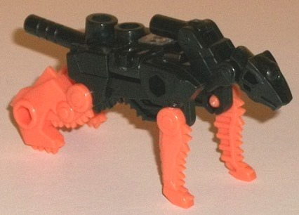
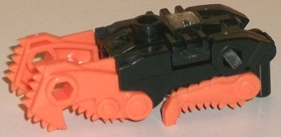
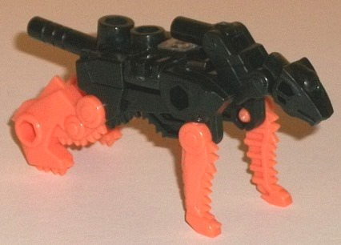
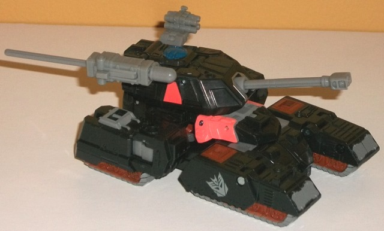
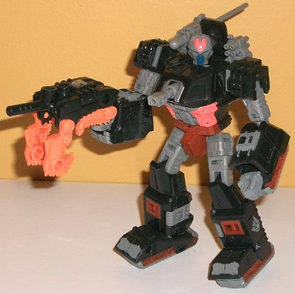

 
Allegiance : Decepticon
Size : Mini-Con
Difficulty of Transformation : Very Easy
Color Scheme : Black, light pale orange, and some clear plastic and silver
Individual Rating : 6.1
 Catgut
Catgut


Allegiance
: Decepticon
Size
: Mini-Con
Difficulty of Transformation
: Very
Easy
Color Scheme
: Black, light pale
orange, and some clear plastic and silver
Individual Rating
: 6.1
Like all BotCon/TFCC
exclusives, Catgut is a redeco, but of a mold previously released only
in Japan--
Arms Micron
Jida. As such, this review of him will be
as if he's a new mold, since for all intents and purposes for this site,
he is. Catgut here is an homage to the G1 character of the same name, who
was also a transformable weapon-partner for G1 Treadshot.
Catgut's alternate mode
is a... hand-chainsaw kinda thing? There's no definite set alt mode for
this guy as he comes with no instructions, but this is my "preferred" alt
mode. It's definitely some sort of melee weapon which I'm assuming is a
chainsaw because of the spikes along rows on the underside of the weapon.
The orange protrusions on the front look like large angular claws, which
is pretty cool-- the smaller orange pieces not so much, as they're too
obvious Catgut's beast mode legs. The other beast mode pieces are either
tucked away or integrated well into this mode. It's just such an... odd
weapon mode. The mold detailing is pretty simplistic outside of the chainsaw
spikes, with only a couple of circles and ridges here and there-- and unfortunately,
Catgut is very sparse in the color and paint department, as well. The leg
pieces are a light pale orange and the rest of him black-- there's no paint
on him whatsoever except for a silver Decepticon symbol over the small
clear piece of plastic on the top of the figure. Granted, for the MOST
part this is accurate to his original figure, but it's still kind of a
bummer as it makes him look a bit bland outside of a slight "Halloween"
vibe. As with most Arms Microns, Catgut has a ton of ports to add on additional
Mini-Cons/Microns-- he's got your standard ports on both sides of the front
claws, one on the top, one on each side near the rear of the weapon, another
port on the underside near the front of the weapon, and a standard-sized
peg at the rear so Treadshot can hold him in this mode. It seems to be
optional, but you can also fold out the sides of this mode to form a "wider"
chainsaw weapon, though to me doing this makes it a bit too obvious the
setup of Catgut's beast mode.
Speaking of Catgut's
beast mode, the transformation is incredibly simple-- just fold out the
head from the underside and fold down the peg on the back of the neck,
then unfold the legs and a tail from further within his underside (the
tail itself is another standard handle, to give him another port where
a larger TF can hold him from-- it can also form a gun barrel as mentioned
in Treadshot's bio (see picture of Treadshot's robot mode below), if you
want to change up Catgut's weapon mode a bit). The proportions are generally
pretty good, though the head sits up a bit oddly high compared to the rest
of the body for this cat mode. The head is detailed with one circular eye,
much like
Movie Ravage's
, which has a nice
look-- though I wish that eye was highlighted with some paint... The head
can move up and down at two points on the neck, and he can also move back-and-forth
at the midpoint on each leg. With the exception of the folded-out head
though, this mode is generally so similar to the weapon mode that I honestly
don't have much else to say about it that doesn't also apply to the weapon
mode.
 Treadshot
Treadshot


Allegiance
: Decepticon
Size
: Deluxe
Difficulty of Transformation
: Medium
Color Scheme
: Black, dull gray,
and some dark brown, bright orangish pink, and dark dull navy blue
Individual Rating
: 7.7
(NOTE: Because this is a repaint, this is not a full-blown review. This mainly covers any changes made to the mold and the color scheme, and merely compares it to Generations deluxe Warpath. For a review on the mold itself, read the review of Generations deluxe Warpath here .)
Treadshot is an update
to the original G1 toy, who was an Action Master-- though like most Action
Masters, the original toy had an "implied" alt mode-- that of a gun. Just
like Megatron, though, it seems like his new updated mode is a tank. The
colors have been quite faithfully recreated when compared to the G1 toy,
with Treadshot's dominant colors being black and a rather dull shade of
gray. By itself, this is admittedly a pretty bland color scheme-- although
again, accurate to the G1 toy. Thankfully, there was also a few other accent
colors on the G1 toy which-- again-- have been faithfully redone here.
First, there's a good amount of dark brown paint-- on the treads, mostly,
but also on the robot lower legs and pelvis. Again, not the most exciting
color as it's still dark, but at least it keeps Treadshot from looking
too monochrome. What helps Treadshot stand out as a toy from the early
'90s is the BRIGHT orangish pink paint used on his abs, the middle of his
forehead, and the sides of his tank turret/chest. This is admittedly a
bit much and honestly a rather ugly color, but it DOES add some bright
ness and contrast to the figure. My favorite color on the toy is the one
used the least-- the dark navy blue, used only on Treadshot's faceplate
and on the tank hatch detail. It's a rather solid shade of the color, and
looks good against the gray (although it's dark enough I wish it contrasted
a bit more with the black). There's also a few other oddities/features
worth mentioning, such as the odd angular Decepticon symbols on the sides
of the front treads-- it makes for some good contrast, but I'm not sure
why they're at an angle. Additionally, this mold really does re-create
some of G1 Treadshot's toy details surprisingly well, such as the gunbarrel
in the middle of the chest and the pink on the sides. Using Warpath's headsculpt
is a bit iffy, though-- G1 Treadshot did have a faceplate and a round head,
but he had a large pink visor for an optic, which really isn't replicated
here at all (his eyes are dark brown). That said, the headsculpt does look
cool, regardless.
No mold changes have
been made to Treadshot.
Treadshot & Catgut
is a pretty nice transforming update of the Action Master toy & his
weapon partner, all things considered. The Warpath mold is an excellent
choice for Treadshot with some important details replicated, though he
could have used a new head. Catgut is also a nice multi-purpose weapon
partner, even if he's a bit simplistic (both in terms of the mold and the
coloring). That said, the colors-- though faithfully recreated-- aren't
particularly exciting, even if there's enough paint apps on Treadshot to
vary things up a good amount. Recommended for those who want updates of
obscure characters, especially obscure Action Masters-- but if you're going
to buy an expensive exclusive toy based purely on how it looks/color scheme,
this is one you can likely pass on.
Reviews by Beastbot